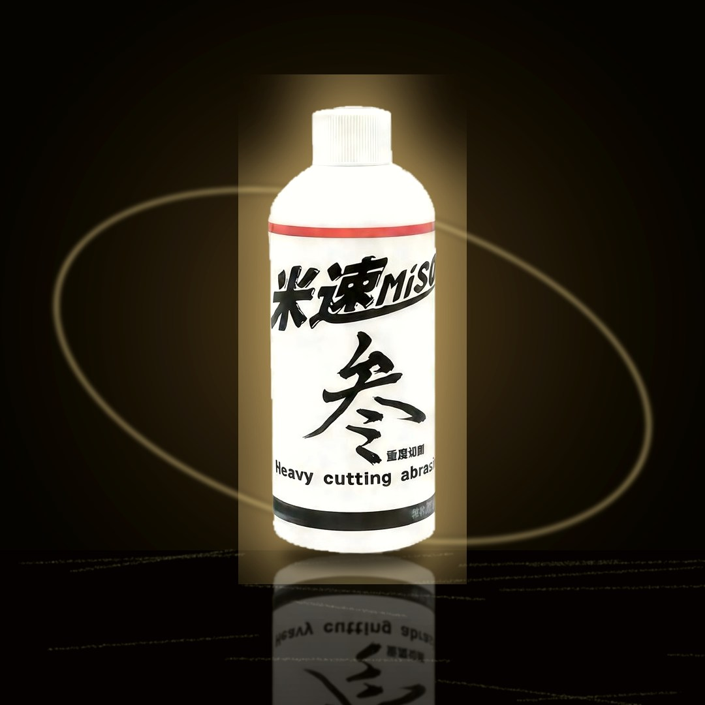

MISO No.3 Heavy Cut (80 grit)
80-grit heavy-cut compound, the coarsest first step in this line. For orange peel, deep scratches, and paint that needs heavy correction.
Add to cart → fill in your details → send your order on WhatsApp; we confirm on WhatsApp whether each item can ship to your country and what shipping costs, then you pay
Product description
Scratches so deep no amount of polishing gets them out, paint that's all orange peel, an old car that needs a full correction — MISO No.3 is the 80-grit heavy-cut compound, the coarsest first step in this line, made for orange peel, deep scratches, and paint that needs heavy correction. Water-based and silicone-free with low dust, it goes on straight with no dilution and runs on RO, GA, and DA polishers. After the 80-grit step, follow up with 600 grit to refine, then finish to a mirror with 1000 grit.
Specs
- Capacity
- 300g (single bottle; 3-bottle set also available)
- Grit
- 80 grit (first heavy-cut step, the coarsest in this line)
- Dilution ratio
- No dilution needed, use straight from the bottle
- Compatible surfaces
- Solid black, soft paint, hard paint, plastic trim; for orange peel, deep scratches, and paint that needs heavy correction
- Not for use on
- For paint that's already aged and oxidized, look at it first before you decide: if the oxidation hasn't eaten through the clear coat yet, you can polish it back. If the oxidation has soaked all the way through the paint, polishing won't bring it back — at that point the paint itself is beyond saving, it's not a compound problem. If you're not sure about the paint's condition, ask first before going straight to a heavy cut.
- Compatible machines
- Works with RO, GA, and DA polishers
- Pads to pair with
- Heavy-cut wool pad (start with a heavy-cut wool pad on badly damaged paint). This is a starting point, not the only way to do it. How you pair pad and grit can be adjusted on the fly based on the result you're seeing — let what comes off the paint decide your next step.
Things to know
- For paint that's already aged and oxidized, look at it first before you decide: if the oxidation hasn't eaten through the clear coat yet, you can polish it back. If the oxidation has soaked all the way through the paint, polishing won't bring it back — at that point the paint itself is beyond saving, it's not a compound problem. If you're not sure about the paint's condition, ask first before going straight to a heavy cut.
- 80 grit is the coarsest first step in this line and cuts hard. Follow the instructions, and test on a small, hidden area first.
- Clean the paint thoroughly before you start. Remove iron fallout, tar, and other contamination so it doesn't scratch the paint during polishing.
- Use with a heavy-cut wool pad, and adjust speed and pressure to the condition of the paint.
- Don't stop after the 80-grit step. Follow up with 600 grit to refine, then finish to a mirror with 1000 grit.
- We don't currently have a full ingredient list, pH value, or Safety Data Sheet (SDS) available to share. If you have concerns about the ingredients, please ask before you buy.
- Polishing kicks up dust and product spatter. Wear gloves and eye protection and keep the area ventilated. If it gets in your eyes, flush with plenty of water and see a doctor.
FAQ
We recommend it for people with some polishing experience. 80 grit cuts hard, so test it on a small, inconspicuous area first to get a feel for it before working a larger panel. If you're new to this, start practicing with the No.5 600 grit instead.
We recommend the POP MONSTER RO Custom Wool Pad (A039). Synthetic wool fibers on a high-rebound foam backing give controllable, linear cutting, with less fiber shedding and slower heat buildup.
After the No.3 80-grit step, the surface will show compounding marks. Refine it with No.5 600 grit (or a finer grit), then finish to a mirror with No.10 1000 grit.
This is a water-based formula with low dust and no splatter, and it's designed to protect the paint — used correctly, it won't haze or burn through. But be careful with cars that have thin paint, like solid-color cars or older vehicles; we recommend checking paint thickness first.
Application guide
Similar products


MISO No.3 Heavy Cut (80 grit)
If you're ready to buy, add it to your cart and send your order on WhatsApp. If you're not sure it's right for your car, ask us on WhatsApp first before you order.